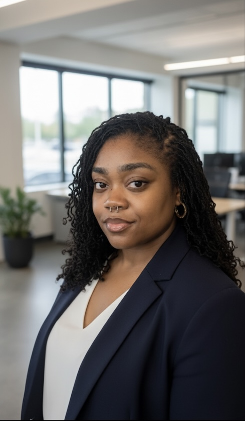

Hi, I’m Dominiqua — IT Support & Cybersecurity Professional
I specialize in real-time monitoring, technical troubleshooting, and incident response. As a Lead GSOC Operator supporting Cox Enterprises, I maintain high-availability environments, analyze alerts, and work closely with IT engineering to improve system performance and reduce failures. With CompTIA A+, Network+, Security+, ITIL, and hands-on experience across 15+ sites, I’m focused on transitioning into IT support and SOC roles where I can apply my technical skillset and strengthen enterprise security.
Multimedia Showcase & Career Pitches
Visualizing Security Architecture (Photo)
I hold CompTIA A+, Network+, Security+, and ITIL certifications and I'm completing my BSIT-to-MSITM at WGU. My immediate goal is to contribute to a security environment where I can apply my practical knowledge of network systems and incident management.
30-Second IT Pitch (Audio)
I’m a Lead GSOC Operator supporting Cox Enterprises, where I manage security operations and troubleshoot enterprise systems across 15+ corporate sites. I have hands-on experience monitoring alerts, resolving technical issues, improving incident workflows, and partnering with IT teams to maintain high availability. I hold CompTIA A+, Network+, Security+, and ITIL certifications and I'm completing my BSIT-to-MSITM at WGU. I’m now looking for an IT support or cybersecurity role where I can apply my technical skills, user support experience, and incident response background.
Technical / SOC-Focused Pitch (Leadership Philosophy (Video))
I currently serve as a Lead GSOC Operator supporting Cox Enterprises, where I specialize in real-time monitoring, triaging alerts, and maintaining critical security systems across 15+ corporate locations. I work directly with IT engineering to reduce recurring system failures, ensure 99% uptime, analyze false positives, and streamline incident response workflows. My background includes log review, access control troubleshooting, CCTV system integrity, and improving alert-handling efficiency. I hold CompTIA A+, Network+, Security+, and ITIL certifications, and I am completing my BSIT-to-MSITM pathway at WGU. I’m now pursuing SOC Analyst and IT security roles where I can expand my work in threat detection, incident handling, and driving operational security improvements.